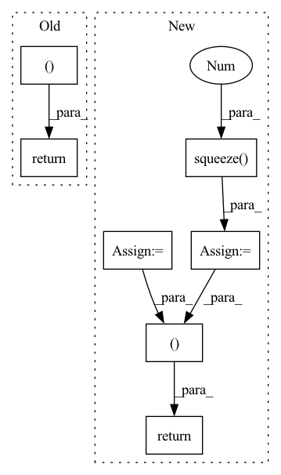

Pattern ID :134

Before Change
)
)
return tight_loss, logs
def get_distortion(self, Y_hat, targets):
raise NotImplementedError()
After Change
distortion = torch.logsumexp(distortion, 0) - math.log(n_z)
else:
distortion = distortion.squeeze(0)
rate = rate.squeeze(0)
// E_x[...]. shape: shape: []
rate = rate.mean(0)
distortion = distortion.mean(0)
loss = distortion + self.beta * rate
logs.update(
dict(
loose_loss=loose_loss / math.log(BASE_LOG),
loss=loss / math.log(BASE_LOG),
rate=rate / math.log(BASE_LOG),
distortion=distortion / math.log(BASE_LOG),
)
)
return loss, logs
def get_distortion(self, Y_hat, targets):
raise NotImplementedError()
In pattern: SUPERPATTERN
Frequency: 3
Non-data size: 7
Instances
Fragment ID: 491926
Project Name: yanndubs/lossyless
Commit Name: 0a24755494712f360cfbc0e8b8ac9f6907157997
Time: 2020-12-04
Author: yanndubois96@gmail.com
File Name: lossyless/losses.py
M Class Name: Loss
N Class Name: Loss
M Method Name: forward(4)
N Method Name: forward(4)
M Parent Class: nn.Module
N Parent Class: nn.Module
M File Name: lossyless/losses.py
N File Name: lossyless/losses.py
M Start Line: 35
M End Line: 53
N Start Line: 30
N End Line: 59
'>
Before Change
processed_inputs=None, mask=None, inputs_lengths=None):
if processed_inputs is None:
processed_inputs = inputs
if inputs_lengths is not None and mask is None:
mask = get_mask_from_lengths(inputs, inputs_lengths)
// Alignment
// (batch, max_time)
// e_{ij} = a(s_{i-1}, h_j)
// import ipdb
// ipdb.set_trace()
alignment = self.alignment_model(cell_state, processed_inputs)
if mask is not None:
mask = mask.view(query.size(0), -1)
alignment.data.masked_fill_(mask, self.score_mask_value)
// Normalize context_vec weight
alignment = F.softmax(alignment, dim=-1)
// Attention context vector
// (batch, 1, dim)
// c_i = \sum_{j=1}^{T_x} \alpha_{ij} h_j
context_vec = torch.bmm(alignment.unsqueeze(1), inputs)
context_vec = context_vec.squeeze(1)
// Concat input query and previous context_vec context
cell_input = torch.cat((query, context_vec), -1)
//cell_input = cell_input.unsqueeze(1)
// Feed it to RNN
// s_i = f(y_{i-1}, c_{i}, s_{i-1})
cell_output = self.rnn_cell(cell_input, cell_state)
context_vec = context_vec.squeeze(1)
return cell_output, context_vec, alignment
After Change
// s_i = f(y_{i-1}, c_{i}, s_{i-1})
rnn_output = self.rnn_cell(rnn_input, rnn_state)
context = context.squeeze(1)
return rnn_output, context, alignment
'>
Fragment ID: 491923
Project Name: coqui-ai/tts
Commit Name: b4032e8dffc2addf976468826129edea2b459ead
Time: 2018-03-07
Author: egolge@mozilla.com
File Name: layers/attention.py
M Class Name: AttentionWrapper
N Class Name: AttentionRNN
M Method Name: forward(7)
N Method Name: forward(8)
M Parent Class: nn.Module
N Parent Class: nn.Module
M File Name: layers/attention.py
N File Name: layers/attention.py
M Start Line: 55
M End Line: 92
N Start Line: 56
N End Line: 89
'>
Before Change
// Alignment
// (batch, max_time)
alignment = self.attention_mechanism(cell_output, processed_memory)
if mask is not None:
mask = mask.view(query.size(0), -1)
alignment.data.masked_fill_(mask, self.score_mask_value)
// Normalize attention weight
alignment = F.softmax(alignment, dim=-1)
// Attention context vector
// (batch, 1, dim)
attention = torch.bmm(alignment.unsqueeze(1), memory)
// (batch, dim)
attention = attention.squeeze(1)
return cell_output, attention, alignment
After Change
context_vec = torch.bmm(alignment.unsqueeze(1), memory)
// (batch, dim)
context_vec = context_vec.squeeze(1)
return cell_output, context_vec, alignment
'>
Fragment ID: 491930
Project Name: coqui-ai/tts
Commit Name: 2fd37a5bad9374002873db26927694dd0d329e90
Time: 2018-02-05
Author: egolge@mozilla.com
File Name: layers/attention.py
M Class Name: AttentionWrapper
N Class Name: AttentionWrapper
M Method Name: forward(8)
N Method Name: forward(8)
M Parent Class: nn.Module
N Parent Class: nn.Module
M File Name: layers/attention.py
N File Name: layers/attention.py
M Start Line: 57
M End Line: 86
N Start Line: 58
N End Line: 89